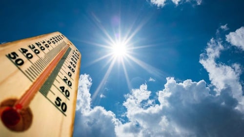
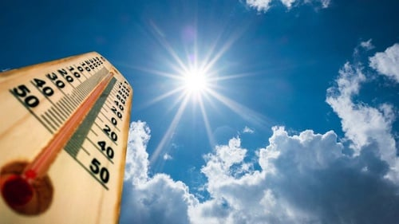

Suhu Ekstrim di Indonesia
Indonesia merupakan negara tropis yang memiliki iklim hangat sepanjang tahun. Namun, dalam beberapa tahun terakhir, Indonesia mengalami fenomena suhu ekstrim di beberapa wilayah. . .
Baca Selengkapnya Indonesia merupakan negara tropis yang memiliki iklim hangat sepanjang tahun. Namun, dalam beberapa tahun terakhir, Indonesia mengalami fenomena suhu ekstrim di beberapa wilayah. . .
Baca Selengkapnya 

Ada beberapa faktor yang menjadi penyebab suhu ekstrim di Indonesia. Berikut di antaranya :
Salah satu penyebab utama suhu ekstrim di Indonesia adalah fenomena El Nino, yaitu kondisi anomali suhu permukaan laut di Samudera Pasifik yang menyebabkan perubahan pola angin dan curah hujan di wilayah tropis. Fenomena El Nino dapat memicu kemarau panjang dan meningkatkan suhu udara di Indonesia.
Suhu ekstrim di Indonesia juga dipengaruhi oleh perubahan iklim global yang disebabkan oleh peningkatan konsentrasi gas rumah kaca (GRK) di atmosfer. Gas rumah kaca menyerap dan
memancarkan kembali radiasi inframerah dari matahari, sehingga meningkatkan suhu rata-rata bumi
Faktor lain yang berkontribusi terhadap suhu ekstrim di Indonesia adalah aktivitas manusia yang menyebabkan kerusakan lingkungan, seperti pembakaran hutan dan lahan gambut,
penggundulan hutan, dan urbanisasi.
Ada beberapa dampak suhu ekstrim di Indonesia. Berikut di antaranya :
Suhu ekstrim dapat menyebabkan berbagai gangguan kesehatan, seperti dehidrasi, kelelahan panas, sengatan matahari, stroke panas, infeksi saluran pernapasan atas (ISPA), asma, alergi, dan penyakit kulit.
Suhu ekstrim dapat menyebabkan kerusakan lingkungan, seperti kekeringan, kebakaran hutan dan lahan, penurunan kualitas air, erosi tanah, dan hilangnya keanekaragaman hayati.
Suhu ekstrim dapat berdampak pada sektor-sektor ekonomi yang bergantung pada sumber daya alam, seperti pertanian, perikanan, kehutanan, pariwisata, dan energi.


Mengingat dampak negatif yang ditimbulkan oleh suhu ekstrim di Indonesia, diperlukan upaya adaptasi untuk mengurangi risiko dan kerugian yang mungkin terjadi. Berikut ini adalah beberapa contoh upaya adaptasi terhadap suhu ekstrim di Indonesia :

Pemerintah dapat melakukan upaya adaptasi dengan membuat kebijakan dan regulasi yang mendukung mitigasi perubahan iklim, seperti pengurangan emisi GRK, pelestarian hutan dan lahan gambut, pengembangan energi terbarukan,
dan peningkatan efisiensi energi
. . .
.png)
Masyarakat dapat melakukan upaya adaptasi dengan meningkatkan kesadaran dan partisipasi dalam perlindungan lingkungan dan mitigasi perubahan iklim. Masyarakat juga dapat melakukan upaya adaptasi dengan mengembangkan
teknologi dan inovasi yang sesuai dengan kondisi lokal dan berkelanjutan
. . .
.png)
Individu dapat melakukan upaya adaptasi dengan mengubah perilaku konsumsi dan gaya hidup yang ramah lingkungan dan hemat energi. Selain itu, individu dapat melakukan upaya adaptasi dengan mempersiapkan diri untuk
menghadapi bencana alam yang mungkin terjadi akibat suhu ekstrem
. . .
Menghemat penggunaan energi listrik dan bahan bakar fosil, seperti menggunakan lampu hemat energi, mematikan peralatan elektronik yang tidak digunakan, menggunakan
Menanam pohon dan menjaga kelestarian hutan sebagai penyerap karbon dioksida dan penghasil oksigen.
Menggunakan energi terbarukan yang ramah lingkungan, seperti tenaga surya, angin, air, atau biomassa
Mengurangi dan mendaur ulang sampah plastik yang sulit terurai dan mencemari lingkungan.
.png)
.png)